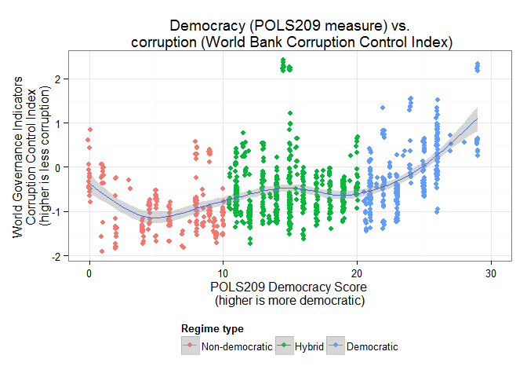
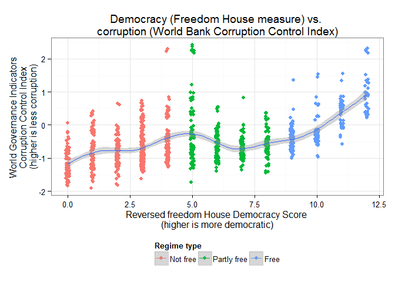
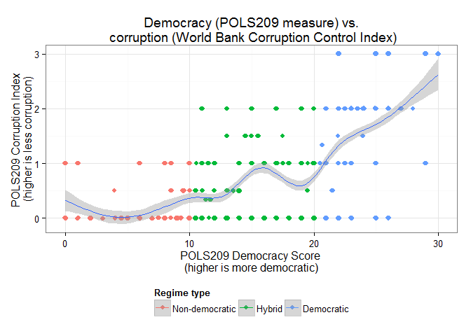

RCE: Visualizing the Results, Part II: Corruption
(This post is a bit more complicated than the first one. It will also be updated as new data – late submissions – come in. Another post with more complex analysis will be coming up later).
(Last updated 2015-06-03 09:00:10)
Corruption is difficult to measure, since it is, by definition, hidden. Efforts have been made by Transparency International and other organizations, including the World Bank, to develop indexes to track perceptions of corruption, but of course the perception of corruption is not the same thing as actual corruption, and such perceptions may not be consistent across countries. To be sure, we might expect that perceptions of corruption would be correlated with actual corruption, but it is also possible that a country that reforms suddenly sees lots of court cases and scandals coming to light, which might lead people to think corruption is worse there than in countries where it is unchecked but still hidden from public view.
In any case, both the Transparency International Corruption Perceptions Index and the World Bank Corruption Control Index aggregate a wide variety of surveys – produced either in-house or by other organizations – in a (hopefully) statistically sophisticated way to come up with a number measuring the extent of corruption perceptions in a country.1 These indexes are not without their critics; even the organizations that produce them suggest that they need to be used with caution. As Rydland, Arnesen, and Østensen 2008 note,
One of the main problems is that neither organisation provides a more detailed definition of corruption: the various attributes that constitute the concept are not identified and the relationship between them is not specified. For example, is the practice of offering gifts or extra favours to potential clients to be considered corruption if the intention is to encourage informal relations with them (Søreide 2005: 3)? And if so, how much weight should such a practice be accorded when constructing a corruption index compared with, say, the payment of massive bribes to secure a contract? Furthermore, what is meant by the extent of corruption? Does more corruption mean that instances of corruption are more frequent, or that they involve larger sums of money (Johnston and Kpundeh 2002: 34)? Since the constructers of the indices do not offer clear guidelines for how to classify various acts as either corrupt or legitimate, and since they do not specify what they mean by “more corrupt”, it is difficult to know exactly how corruption is defined. (p. 81).
Other problems include the fact that different surveys, asking sometimes slightly different questions, are used to construct scores for different countries; and that scores are difficult to compare across time. In the TI case, the organization explicitly warns researchers not to use the index for temporal comparisons over long periods of time, since they made some important methodological changes in 2012 which rendered their post-2012 scores incomparable with the scores from the earlier period. More generally, such indexes are very imprecise measurements of corruption, however defined; they are best used not to make hyper-precise judgments about levels of corruption in particular countries, but at best rough and ready estimates.
Despite these problems, they are the best tool we have for making reasonably consistent comparisons across countries and over time, though everything I say below should be taken with a grain of salt, and supplemented by analysis of particular countries. Having read the explanations both organizations provide about their methodology, as well as the short note by Rydland, Arnesen, and Østensen on existing corruption indexes, I have decided that we will be using here the World Bank’s Corruption Control index as our main measure of corruption, since (unlike the TI measure) it can be used to make comparisons over time. (It is also easier to download and cleanup, an important consideration for me right now). Your own measure of corruption is correlated at 0.53 with the World Bank’s measure; though not perfect, of course, this is not too bad for something that is so difficult to measure, so I will be using the POLS209 corruption index as well in the graphs below.
The first graph shows you a simple scatterplot of the World Bank’s corruption control index vs. the POLS209 democracy score. (Dots are “jittered” a bit to avoid overplotting).

As you can see, the graph shows a correlation between “being more democratic” (by the POLS209 measure) and “being less corrupt” (by the World Bank’s measure). The correlation is not by any means perfect; there are plenty of democratic country-years with high levels of corruption. But there are very few genuinely non-democratic regimes with with low corruption, and there is clearly some relationship between higher levels of democracy and less corruption. (The spike within the hybrid regime space is Singapore). The relationship is not very different if we use Freedom House’s measure of democracy instead of the POLS209 measure:

Or if we use your own measure of corruption instead of the World Bank’s measure:

(If we use the POLS209 measure of corruption, we see fewer non-democratic but relatively uncorrupt country-years, and more democratic and relatively uncorrupt country-years).
Of course, correlation is not causation - and “cross-country” correlations (correlations between measures of political and social characteristics in different countries and at different times) are especially difficult to interpret. Moreover, these associations between low corruption and high democracy are not nearly as clear if we look at variation over time, per country; few countries that become more democratic seem to show a commensurate decrease in corruption. To see this, take a look at the graph below. This is arranged from “most corrupt perceptions” (upper left-most country) to “least corrupt perceptions” (lower right-most country), on average, using the WGI’s corruption control index. It shows both the POLS209 democracy score (colored line) and the WGI’s corruption control index (grey ribbon) as they change in each country, plotted on a 0-1 scale.

We had to throw away a lot of data, since the corruption control index only goes back to 1996 (and not for all countries), and the POLS209 measure of democracy is missing many years as well, so the graph is not as complete as it could be. Nevertheless, here are a couple of things to note. (You may notice more things, but this is only what I see right now).
First, perceptions of corruption are pretty stable, despite the uncertainty in the WGI index (shown by the ribbon, which indicates a 95% confidence interval). Few countries show large changes in corruption perceptions, and these are not obviously correlated with political regime changes. There are some exceptions; Rwanda (towards the middle of the graph) shows a remarkable decrease in corruption perception, probably correlated with the rise to power of Paul Kagame, and so does Georgia, though (at least by your measure of democracy) these decreases in corruption were not related to any important changes in their political systems. (Eritrea, conversely, shows a remarkable increase in corruption, which is also not correlated, by your lights, with any political changes). Yet on average, corruption perceptions don’t show much of a trend anywhere, and there is little correlation between increases/decreases in democracy (at least by the POLS209 measure) and decreases/increases in corruption. Why is corruption so seemingly stable, and why does it seem to be uncorrelated with political changes?
Second, though many of the countries perceived to be highly corrupt have either hybrid or non-democratic regimes (e.g, Afghanistan, North Korea), and many of the countries perceived to be least corrupt have democratic regimes (e.g, the Netherlands, Chile) - there are several important exceptions. On the non-democratic, relatively non-corrupt side, we find Oman, Singapore, and Bahrain; on the democratic, corrupt side, we find Iraq and Paraguay, among others. What might explain the exceptions? How do non-democratic regimes manage to keep corruption perceptions to a minimum?
In order to get a sense of how missing data in the POLS209 measure of democracy might be affecting the results, we replicate the graph above using Freedom House’s measure of democracy instead, which covers more years:
Here the pattern is similar: uncorrupt democracies at the bottom, corrupt authoritarian regimes at the top, but with many exceptions. And again, there is little relation between changes in political regime and changes in corruption. Though a few countries do fit the expected pattern (e.g., Venezuela has become less democratic by Freedom House’s lights and apparently more corrupt in the period since 1996), the vast majority show no such pattern, despite many visible changes of regime in many countries. What might explain the lack of correlation?
The final graph for today simply shows you the countries that have the greatest (positive and negative) changes in corruption perceptions from the graph above:
Is there anything special about these countries? Why do Georgia and Rwanda show large decreases in corruption, while Eritrea, Zimbabwe, Kuwait, and Kyrgyzstan show large increases in corruption? Is there any relationship between these changes in corruption and any political changes in these countries?
One thing I haven’t shown you is how corruption correlates with wealth; it might be that changes in corruption have more to do with economic development than with political changes. But more on this topic tomorrow.
What else would you like to see? What questions do you have?
All code for this post is available in this repository. If you are technically minded and want to learn some more, you might wish to download the R programming language and RStudio and play with it; I can help you if you are interested. (If you want to replicate the graphs and correlations above, you will also need a spreadsheet with the Freedom House scores, available here, as well as the WGI Corruption Control Index, available in the repository.)
See the description in Rydland, Arnesen, and Østensen 2008, p. 80 for some details of how this is done, and the respective “methodology” documents put out by TI and the World Bank for the more complete discussions of how these indexes are produced.↩